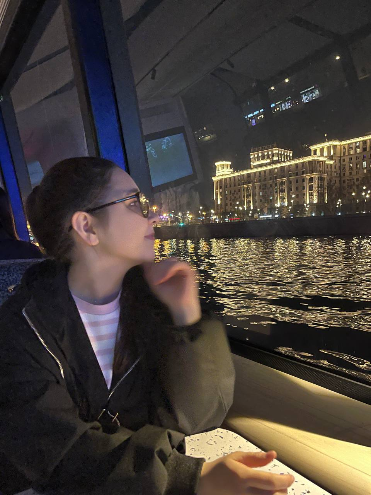
Создала новую виртуальную машину в графическом интерфейсе и указала
имя виртуальной машины, соответствующее моему логину в дисплейном
классе.
Указала размер основной памяти виртуальной машины — 4096 МБ.
Задала конфигурацию жёсткого диска — загрузочный, VDI.
Задала размер диска — 80 ГБ.
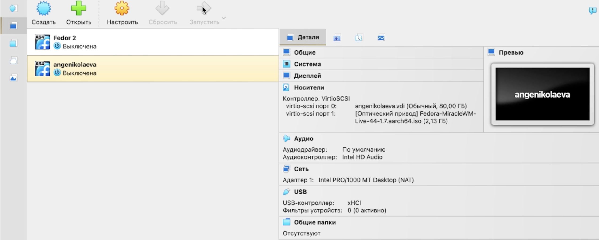
Добавила новый привод оптических дисков и выбрала образ.
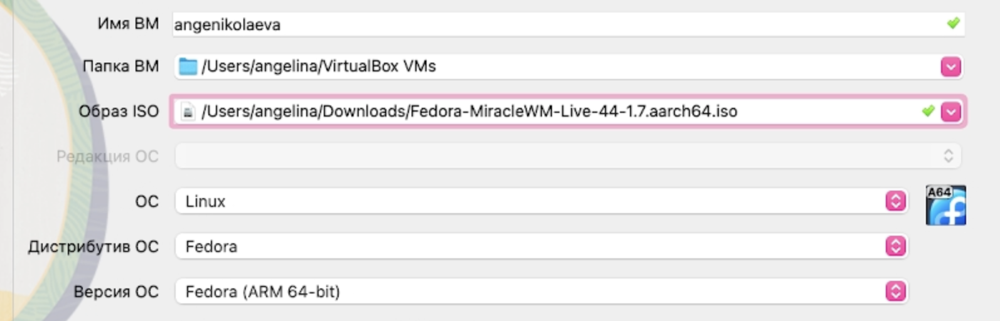
Обновила все пакеты и установила программу для удобства работы в консоли.
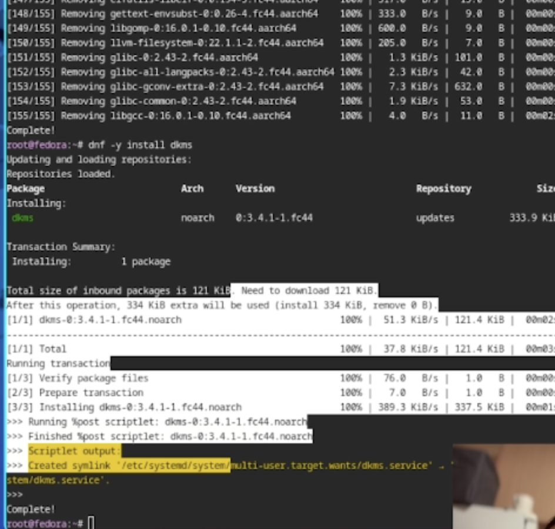
Отключила систему безопасности SELinux.
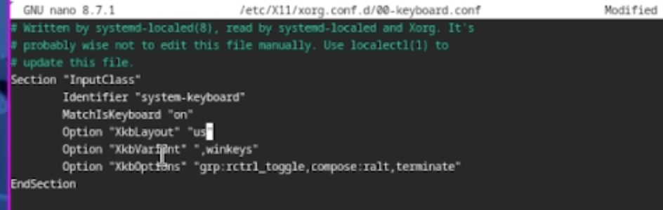
Запустила терминальный мультиплексор tmux и создала
конфигурационный файл
~/.config/sway/config.d/95-system-keyboard-config.conf.
Отредактировала конфигурационный файл.
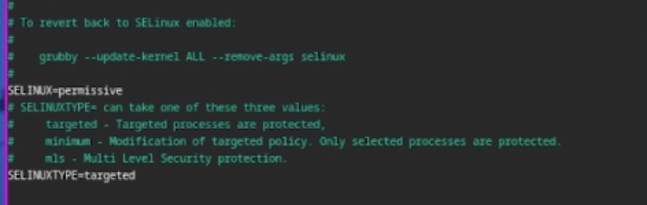
Установила имя хоста, добавила своего пользователя в группу
vboxsf.
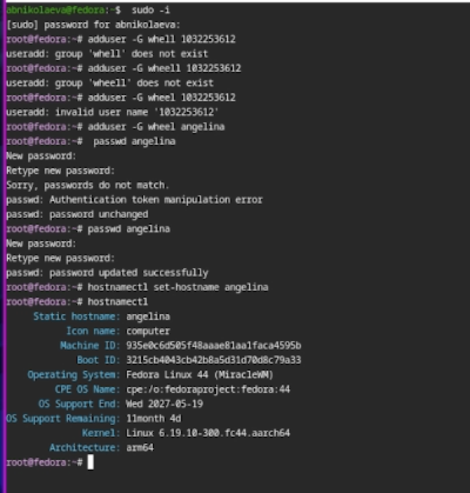
Запустила терминальный мультиплексор tmux, переключилась
на роль супер-пользователя и установила средство pandoc для
работы с языком разметки Markdown.
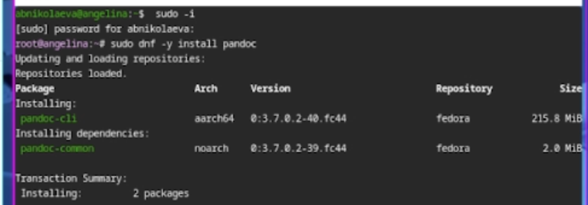
Установила дистрибутив TeXlive.
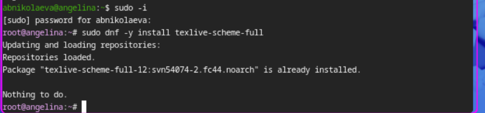
Получила версию ядра Linux.
Получила частоту процессора и модель процессора.
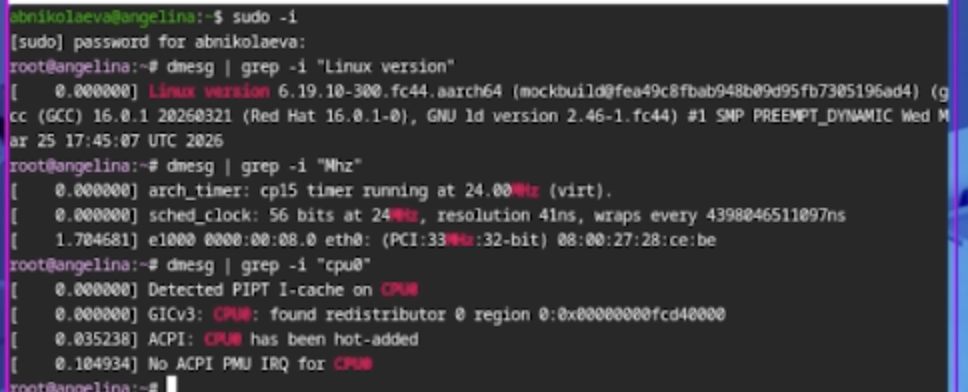
Получила объём доступной оперативной памяти.
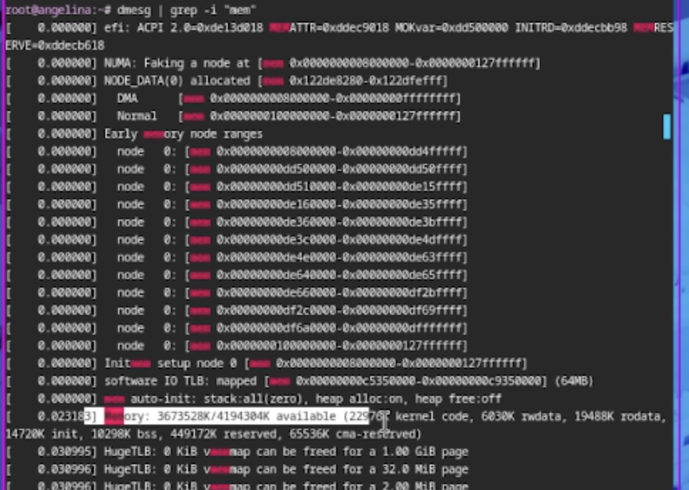
Получила тип обнаруженного гипервизора и последовательность монтирования файловых систем.
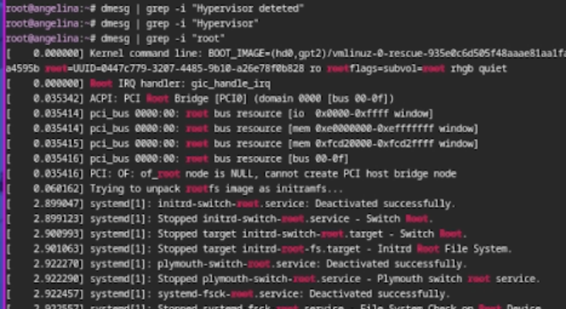
В ходе работы были освоены базовые приёмы работы в терминале Linux и оформления результа.